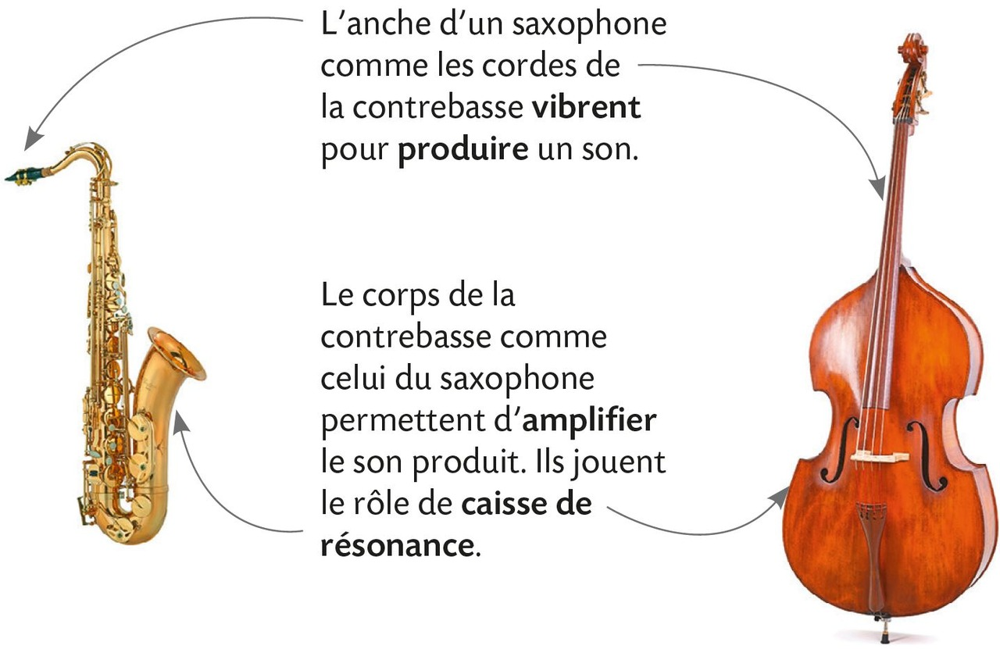
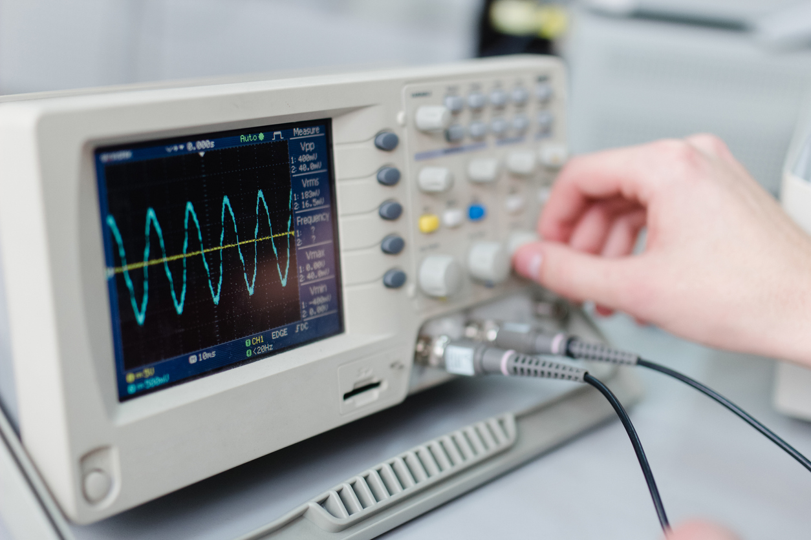
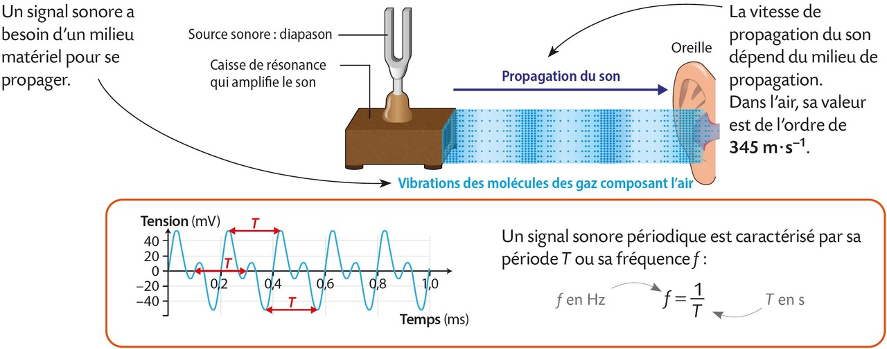
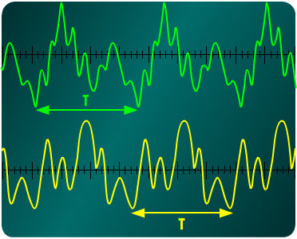
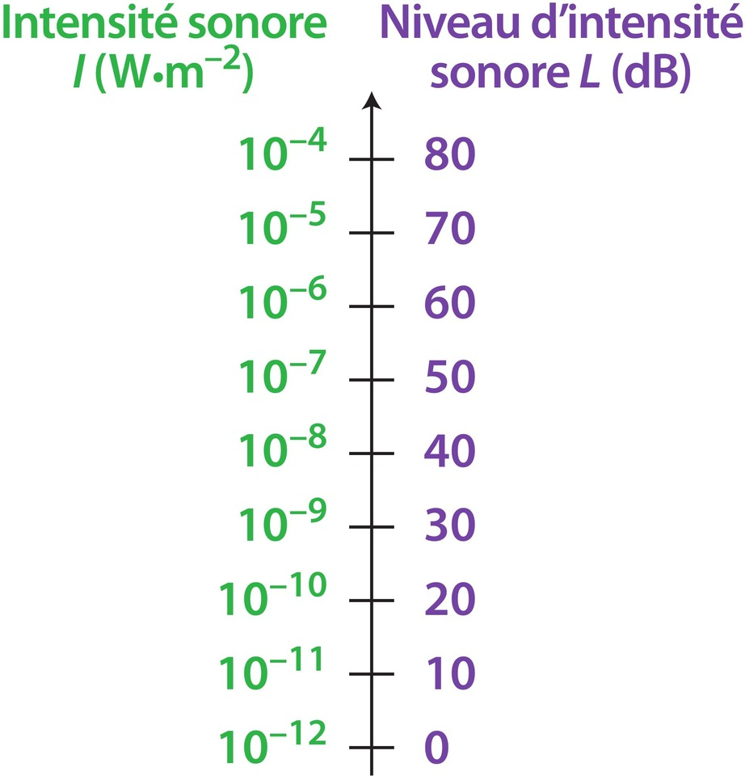
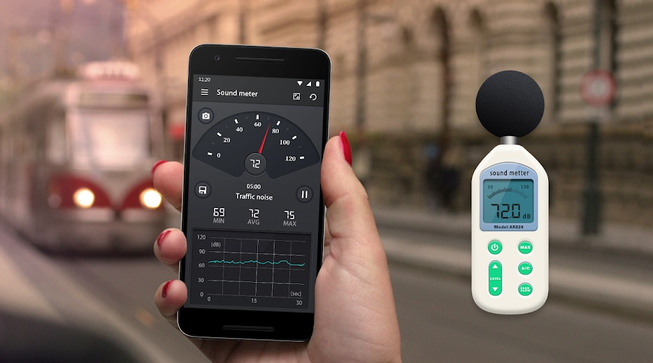
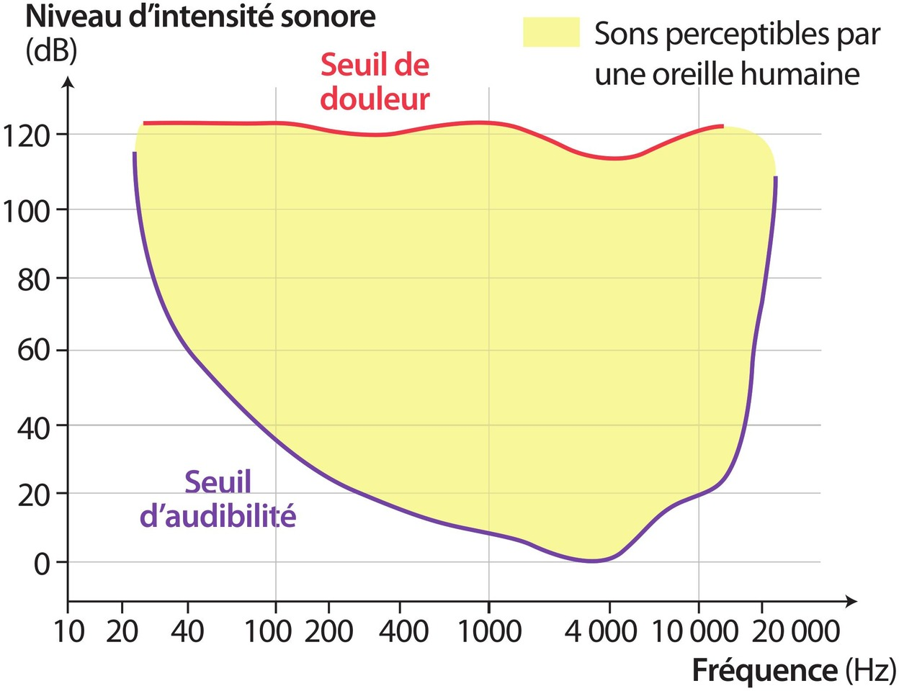

Chapitre VIII : Émission et perception d'un son⚓︎
I. Émission et propagation d'un signal sonore⚓︎
1. Création d'un son⚓︎
- Un son est créé par la vibration rapide d'un objet comme les cordes d'une guitare, les ailes d'un insecte ou les feuilles d'un arbre au vent. Cette vibration est souvent d'amplitude micrométrique à millimétrique et provoque des sons de faible intensité.
- Pour résoudre ce problème, beaucoup d'instruments et d'êtres vivants sont dotés d'une caisse de résonance.

2. Propagation du son⚓︎
On entend un son en étant à distance de la source qui l'a créé : entre la source sonore et l'oreille, il y a propagation du son.
Onde sonore
- La vibration initiale est transmise de proche en proche au niveau microscopique entre molécules ou atomes du milieu de propagation qui oscillent autour de leur position initiale.
- Comme une « ola » dans un stade : la vague se déplace, mais les supporters ne l'accompagnent pas dans son déplacement latéral.
On parle de signal sonore ou d'onde sonore qui se propage depuis la source.
- L'onde sonore nécessite un milieu de propagation (solide, liquide ou gazeux) pour se déplacer : air, bois, métal, eau…
- En l'absence de milieu matériel, donc dans le vide, il ne peut y avoir propagation du son. → Par exemple, sur la Lune, qui n'a pas d'atmosphère, les sons ne se propagent pas.
Le son est une onde mécanique
Un signal sonore est un phénomène de :
- déplacement d'une perturbation de proche en proche sans transport effectif de matière (définition d'une onde)
- dans un milieu matériel (définition d'une onde mécanique)
3. Vitesse de propagation⚓︎
Dans un milieu donné, le son se propage avec une vitesse caractéristique, appelée célérité, qui dépend :
- de la nature du milieu
- de la température
Dans l'air, à environ 20 °C, la célérité du son est proche de 340 m·s⁻¹.
La vitesse de propagation du son augmente avec la densité du milieu.
| Milieu | Air | Eau liquide | Acier |
|---|---|---|---|
| v (m·s⁻¹) | ≈ 340 | ≈ 1500 | ≈ 5000 |
Exercice n°3© p. 237 et 24 p. 241
{kind=link}
{kind=link}
II. Description d'un signal sonore⚓︎
Acquisition⚓︎
À l'aide d'un microphone, on peut transformer un signal sonore en signal électrique, visualisable :
- sur un oscilloscope (les tensions observées sont proportionnelles à l'intensité de l'onde sonore) ;

- ou sur un ordinateur (après conversion de l'analogique au numérique).
Le signal affiché permet alors d'analyser le son.
Analyse⚓︎
Un signal sonore est périodique si son enregistrement présente une répétition régulière d'un même motif. Remarque : il s'agit d'un cas particulier car les signaux sonores ne sont pas forcément périodiques.
🎯 Exemple de signal sonore périodique :

La période
-
Par lecture graphique :
- La période T d'un signal périodique se lit sur un graphique représentant le signal (temps en abscisse).
- C'est la durée du plus court motif qui se répète à l'identique.
- Elle s'exprime en seconde (s).
-
Par calcul (si la fréquence est donnée) : \(\displaystyle T=\frac{1}{f}\) où \(f\) est en hertz.
La fréquence
- La fréquence f du son est le nombre de périodes par seconde.
- Elle s'exprime en hertz (Hz).
- Par calcul : \(\displaystyle f=\frac{1}{T}\) où \(T\) est en secondes.
Exercices n°6, 8 p. 238 et 32 p. 244
{kind=link}
{kind=link}
III. Le son et l'oreille⚓︎
1. Domaine des fréquences audibles⚓︎
L'oreille humaine ne perçoit que certaines fréquences.
Domaine de fréquences audibles
- Le domaine des sons audibles est compris entre 20 Hz et 20 kHz (ce domaine varie selon les individus et diminue avec l'âge).
- Un son trop grave (f < 20 Hz : infrasons) ou trop aigu (f > 20 kHz : ultrasons) n'est pas entendu.
2. Hauteur d'un son et timbre⚓︎
La fréquence détermine la hauteur d'un son
- Un son de fréquence élevée → son aigu
- Un son de fréquence basse → son grave
En musique, des sons de même hauteur correspondent à la même note.
🎯 Exemple : Le Sol₃ à 196 Hz est la note de la corde de Sol à vide sur de nombreux instruments à cordes, notamment :
- la guitare : la 3e corde (en partant du bas) est accordée en Sol₃ ;
- le violon : la 2e corde est un Sol₃ ;
- l'alto : la 2e corde est également un Sol₃ ;
- le banjo et la mandoline : ces instruments possèdent aussi une corde accordée à cette fréquence. Cette fréquence peut aussi être trouvée sur d'autres instruments comme certains bols chantants tibétains.
Cependant, deux instruments jouant la même note restent distincts à l'oreille : leur timbre est différent.

Le timbre
Le timbre est l'ensemble des caractéristiques du signal permettant de distinguer un son d'un autre de même hauteur.
Exercice 1 : hauteur d'un son
- La contrebasse, couvre une large plage de fréquence allant d'environ 40 Hz à 2 kHz.
- Les fréquences minimales et maximales audibles d'un violon peuvent varier, mais on peut considérer une plage allant de 196 Hz (Sol) à environ 2637 Hz (Mi)
- Lequel de ces deux instruments permet de jouer les notes les plus graves ?
- Lequel de ces deux instruments permet de jouer les notes les plus aiguës ?
- Les deux instruments peuvent-ils joueur un Sol₃ ? Si oui, qu'est-ce qui distingue les deux sons ?
- La contrebasse peut joueur des notes plus graves (sons de plus basse fréquence) que le violon.
- Le violon peut joueur des notes plus aiguës (sons de plus haute fréquence) que la contrebasse.
- Les deux instruments peuvent jouer un Sol₃ puisque la fréquence de cette note se trouve dans la gamme de fréquence deux deux instruments. Ce qui distingue les deux sons à l'oreille c'est le timbre et à l'observation du signal à l'oscilloscope ou à l'ordinateur c'est la forme du signal qui est différente bien que la fréquence soit la même.
3. Intensité et niveau sonore⚓︎
- Un son est deux fois plus intense si la source sonore vibre avec une amplitude deux fois plus grande. Pourtant, il ne sera pas perçu deux fois plus fort par l'oreille. L'oreille ne réagit donc pas proportionnellement à l'intensité sonore I.
- Une grandeur liée à la sensibilité de l'oreille humaine, et plus facile à manipuler, est le niveau d'intensité sonore L exprimé en décibel (dB).

- On peut mesurer le niveau d'intensité sonore grâce à un sonomètre (ou une application sur son smartphone).

4. Perception des sons par l'oreille⚓︎

Danger
Un niveau d'intensité sonore trop élevé peut endommager l'oreille.
{kind=link}
{kind=link}